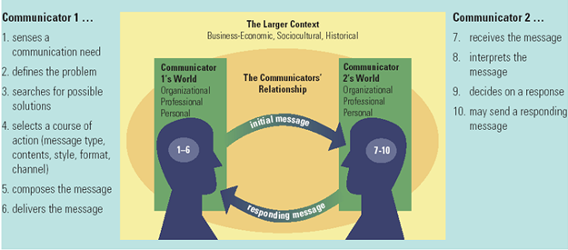
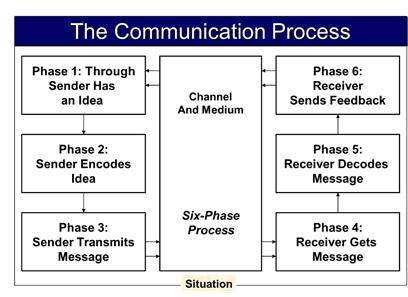

Chapter 1 of My Series on Business Communications Skills. This was a course of my final semester undergraduate studies. These chapters are a collection of my study and research on Business Communication Skills while doing my undergrad.
Keywords: Role of Communication, Importance of Communication in Business, Grapevine, Factors of Volume, Verbal, Non-Verbal (Expression)
Communication
A process where messages are sent and received. Communication only works when the message is heard, inducing behavior, or inspiring the recipient to think in new and different ways.
Business Communication: Transferring information from one part of the market to another, leading to some outcome, changing actions, or changing procedure.
- Formal Communication: Established and agreed on procedures.
- Informal Communication: Channels not formally recognized.
The Role of Communication in Business
Communication is a significant part of entrepreneurial work. Understanding gaps in the interactions between businesses make the workplace more efficient and harmonious.
The Importance of Communication Skills
Communication is very crucial in business. Businesses want and need people with excellent communication skills. Different surveys have found communication skills as the, at or near the top of the business skills required for success.
431 Manages, and Executives participated in a survey about ‘graduates’ preparedness for the workforce named – Oral Communications, Teamwork/Collaboration, Professionalism/Work Ethic, Written Communications and Critical Think/Problem Solving – Top fundamental skills job applicants should have.
Employers surveyed for the National Association of Colleges and Employers Job Outlook Survey for 2011 rated – Communication – as the most valuable soft skill, with teamwork skills and analytical skills following closely behind.
Thinking for oneself, Taking initiatives, Solving problems, Discussions, Giving instructions, Interactions – Business Communication Skills.
NFI Research asked Senior Execs. And managers what areas of their companies that they need to improve – Efficiency and Communication.
Poor Communication – Drawback for Business.
Performance is judged based on how one communicates.
Improving one’s communication skills improves one’s chances for success in business.
Why Business Depends upon Communication?
Business – Economic and Social system.
A communication chain in pharmaceutical manufacturer –
- Salesperson communicates with customers, receives different instructions and information.
- Executives with Customers and Managers.
- Production Supervisors receive work orders, issue instructions, receive status reports, and submit production summaries.
- Marketing professionals with the company’s executives on market information and proposing new directions.
- Researchers gather information.
- Public Relations Professionals use various media to brand and maintain the public’s trust.
Current Challenges of Business Communications
- The need for expanded media literacy (Social Intelligence).
- Increasing Globalism and Workplace Diversity.
- Increased need for strong analytical skills (Computational Skills, Visual Literacy, Interpretive Skills)
- Increased focus on ethics and social responsibility.
Main Forms of Communication in Business
- Operational – Internal and External
- Personal
Communication Networks
- Formal Network
- Well Established, Along Operational lines
- Planned
- Informal Network
-
- Dynamic
Grapevine Communication
“Unstructured and Informal Network founded on social relationship rather than organizational.” - Nancy Borkowski
“An informal chat between people, seen as a network through which the information is reliably spread” - Mc Shane & Van Gilnow
Grapevine communication is a form of informal Communication by which people communicate without any formal communication line.
“Grapevine communication is defined as unstructured and Informal network formed on social relationship rather than organizational charts or job descriptions. It is actually an informal vehicle through which message flows throughout the organization.” - Nancy Borkowski
Grapevine is a medium through which the organization’s internal contact takes place between different troops, and provides the desired outcome. Since it is unstructured and not under full management control, it moves in every direction. It moves upward, downward and diagonally, between staff and managers, within and without chain of command, and even with and without a company. It gives an idea that grapevine is not a mode of Communication that follows the path of structure. It moves in all the upward, downward, and even diagonal directions.
Medium
Letters, Memo, Report, Notice Board, Faxes, Telephone, E-Mail, Face-to-Face, Body Language, Video/Conferencing, Internet
Factors Affecting Volume of Communication in Business
- Nature of the Business
- Operating Plan
- People
Verbal (Oral) Communication
Oral Communication is a relaxed and often informal way to communicate with people at all levels, in both your personal and business life. Orally / verbally reporting is much less formal than lettering or written reporting.
Oral Communication can be informal or formal, involving person-to-person contact at many different levels of business, and is a widespread occurrence in everyday life. It includes both listening and talking. Official oral Communication may involve interviews, evaluations, reports, lectures, speeches, and presentations to a single person, individual groups, or meetings; People suffering from blocked minds can be a problem with oral Communication.
Some Aspects of Oral Communication
Confidence, Sincerity, Thoroughness, Friendliness, At Ease, Mind set of both Parties, Approachability, Appearance and Grooming, Body Language and Signals, Gestures and Facial Expressions, Tone of Voice, Patience, Use of Visual Aids, Empathy.
Communication can be non-verbal, by using visual aids, including Graphics, Brochures, Overheads, Sample of Products, Inspections, Visits, Videos, Photos, Demonstrations, Letters, Testimonials, Computers, Email, Internet.
Verbal Communication is an auditory language used to share knowledge with others. It encompasses sounds, words or speech. One’s voice tone, speed, and pitch may all lead to successful verbal Communication.
Non-Verbal Communication is non-verbal or visual contact between persons. This includes gestures, facial expressions, and movement of the body, timing, touch, and other things that communicate without talking.
Visual – Verbal – Tactile
We use various stimuli to communicate, think, and remember, which can be visual, verbal, or tactile.
Tactile
Thinkers think best and remember when memory is based on actual experiences and prefers to be active, hands-on learning rather than showing. They use the feelings and actions of people to analyze Communication and to appreciate the point of view of other people. Something that is ‘tactile’ can be touched physically in a literal sense-it’s tangible. Tactile products encourage interaction in a marketing context, and this type of product can be very successful in generating responses.
Types of touch items include scratching outlines, taking out tabs, and pop-ups. Even tactile devices are original folds in brochures that force the reader to open them in a slightly different way.
Verbal
Thinkers remember in words, sounds, and numbers, so they usually find it easy to put words on paper and discuss ideas before they communicate. They are good at grammar and punctuation and, although their written messages are often too long, they usually spell well.
Visual
In images and photos, thinkers remember most clearly and are often characterized as having photographic memories, and they can also use vivid, descriptive language. They are also attracted to pages with strong eye appeal and open space and shun dull, cluttered reading pages.
Business Communication Process
 The Process
The process of communicating beings when one person (sending initiates a transmission). He or she may decide that the transmission, backed up by some idea, opinion or fact, needs to be transmitted to another.
The next step is encoding the meaning into a situation-appropriate type. Such encoding may take the form of spoken phrases, gestures, facial expressions, physical acts, or even expressions of the art.
The message is transmitted through the respective channel after encoding. Printed pages, face-to-face discussion, airwaves, and telephone lines are common channels.
The message is received by one or more other people and decoded via senses such as eyesight and hearing.
t has to be converted into comprehension for the recipient after the message is received.
Reference
- Rentz, K. and Lentz, P., 2014. Lesikar’s Business Communication. New York, NY: McGraw-Hill.
- Ahmed, S., 2020. Effective Communication In Business.
- Termpaperwarehouse.com. 2020. Grapvine Communication.
- Gamil, D., 2020. The Role Of Communication In Business.